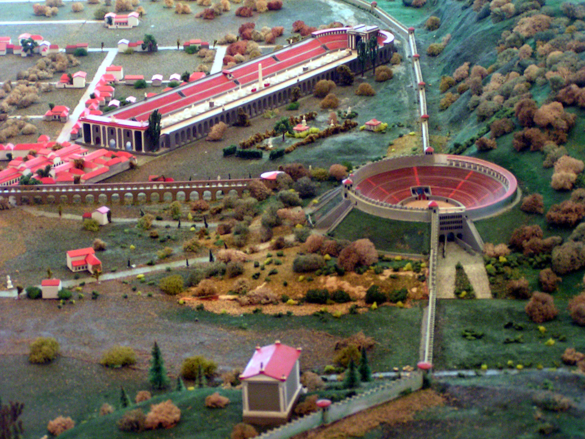

Illustration de l’entrée nord : façade monumentale, escaliers latéraux, arcades et colline verdoyante en arrière-plan.
paysage verdoyant et circulation des visiteurs.

L’entrée nord de l’amphithéâtre se distingue par ses portails, ses ouvertures en série et ses murs de pierre qui structurent l’ensemble du monument. L’architecture met en valeur la montée vers les niveaux supérieurs tout en s’intégrant au paysage.
Autour de la construction, on aperçoit des citoyens, des arbres, des prairies et de vastes plaines. Le site combine ainsi présence humaine, organisation bâtie et environnement naturel.
Les murs, réalisés en calcaire, donnent une impression de solidité et de permanence. L’ensemble évoque à la fois la fonction défensive, l’accueil du public et le prestige du lieu.
Les portails et les rangées d’ouvertures créent une façade rythmée. Les lignes horizontales du mur et les escaliers latéraux renforcent l’effet monumental de l’entrée.
Le monument s’inscrit dans un décor de collines verdoyantes, d’arbres et de prairies. Cette implantation donne au site une dimension à la fois naturelle et spectaculaire.